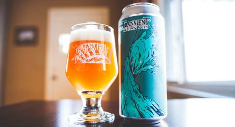

HOME
IPAs
The Juice Is Loose IPA
Transient Artisan Ales
Hops burst out of this glass with absolutely no bitterness. Bright fruit flavor of passion fruit and citrus.
Located in Bridgman, MI, Transient Artisan Ales was formed not due to a lack of great beer, or with the intentions of growing a massive craft beer brand. Rather, our goal is to recognize and appreciate the bounty of our local environment, take time to enjoy a simple and beautiful thing, and provide others the opportunity to do the same.
Check out their site HERE 